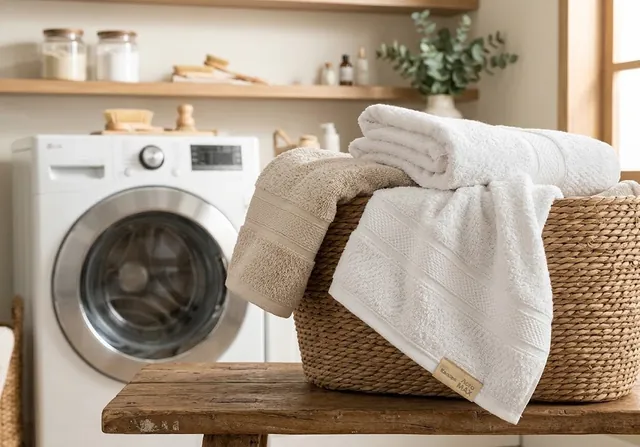

Cuide bem da tua toalha
Pequenos cuidados, mais conforto todos os dias.
Uma toalha macia, aconchegante e com boa absorção faz toda a diferença na rotina. E, com alguns cuidados simples, você pode preservar essas qualidades por muito mais tempo.
Na TUA Home, acreditamos que o cuidado com a casa está nos detalhes. Por isso, reunimos algumas dicas para ajudar você a conservar suas toalhas, mantendo a beleza, a maciez e a funcionalidade que tornam cada banho um momento especial.

Dicas de cuidados
-
Antes de lavar, separe as peças
Separe as toalhas por cores, mantendo as brancas, claras e escuras em lavagens diferentes. Sempre que possível, lave-as separadamente de outras roupas para evitar atrito com zíperes, botões e tecidos que soltam fiapos.
Antes da primeira lavagem, confira as orientações da etiqueta e respeite as recomendações específicas de cada peça.
-
Use a quantidade certa de sabão
Menos é mais! Utilize a quantidade de sabão recomendada para o volume de roupas e o nível de sujeira. O excesso de produto pode se acumular nas fibras, deixando as toalhas rígidas e reduzindo sua capacidade de absorção.
Prefira um ciclo de lavagem suave, quando indicado, e garanta um bom enxágue para remover os resíduos.
-
Amaciante: use com moderação
Nas toalhas Karsten, recomendamos evitar o uso de amaciante nas três primeiras lavagens, pois as peças já recebem um tratamento especial durante a fabricação.
Após esse período, se optar pelo produto, utilize-o com moderação e respeite a dosagem indicada pelo fabricante. O excesso pode formar resíduos nas fibras e comprometer a absorção da toalha.
-
Seque com cuidado
Após a lavagem, utilize a centrifugação conforme as orientações da etiqueta para retirar o excesso de água. Em seguida, sacuda suavemente a toalha para ajudar a soltar as fibras.
Sempre que possível, seque-a à sombra, em local arejado. Caso utilize a secadora, escolha uma temperatura baixa, desde que permitida na etiqueta. O calor excessivo pode prejudicar as fibras e comprometer a durabilidade do tecido.
Certifique-se de que a toalha esteja completamente seca antes de guardá-la, evitando odores desagradáveis e umidade no armário.
-
Evite passar a ferro
O ferro de passar pode achatar as fibras felpudas e comprometer o toque macio da toalha. Para preservar seu volume e sua textura, prefira dispensar essa etapa e deixar a peça secar naturalmente.
Se houver necessidade de passar, siga as orientações da etiqueta.
-
Guarde suas toalhas corretamente
Depois de secar, guarde as toalhas em um armário limpo, seco e ventilado. Evite armazená-las ainda úmidas ou em ambientes abafados.
Mantenha as peças organizadas e sem compressão excessiva para preservar o volume das fibras e facilitar o uso no dia a dia.
-
Cuide das toalhas no dia a dia
Após o banho, estenda a toalha em um local arejado para que seque completamente antes do próximo uso. Evite deixá-la amontoada, sobre a cama ou dentro do cesto de roupas úmidas.
Também evite o contato com cosméticos, protetores solares, produtos de limpeza e substâncias que possam manchar ou danificar o tecido.
-
Atenção aos fiapos nas primeiras lavagens
É natural que toalhas novas soltem algumas fibras durante as primeiras lavagens. Esse comportamento tende a diminuir com o uso e as lavagens adequadas.
Para ajudar a conservar a peça, evite misturá-la com roupas que soltam muitos fiapos e mantenha o filtro da máquina limpo, conforme as instruções do fabricante.
O segredo está nos pequenos cuidados.
Com a lavagem adequada, a secagem correta e o carinho de todos os dias, suas toalhas podem acompanhar muitos momentos especiais, mantendo o conforto e a beleza por mais tempo.
TUA Home · Cuidado que faz parte da tua casa.
Importante: as recomendações podem variar conforme o modelo, a composição e o acabamento da toalha. Consulte sempre a etiqueta da sua peça e siga as instruções específicas do fabricante.
Acesse este guia a qualquer momento:
tuahome.com.br/cuidados.html